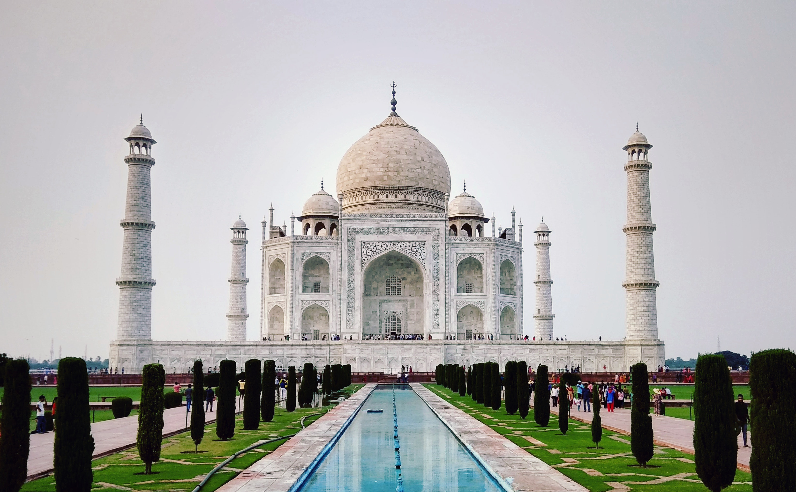
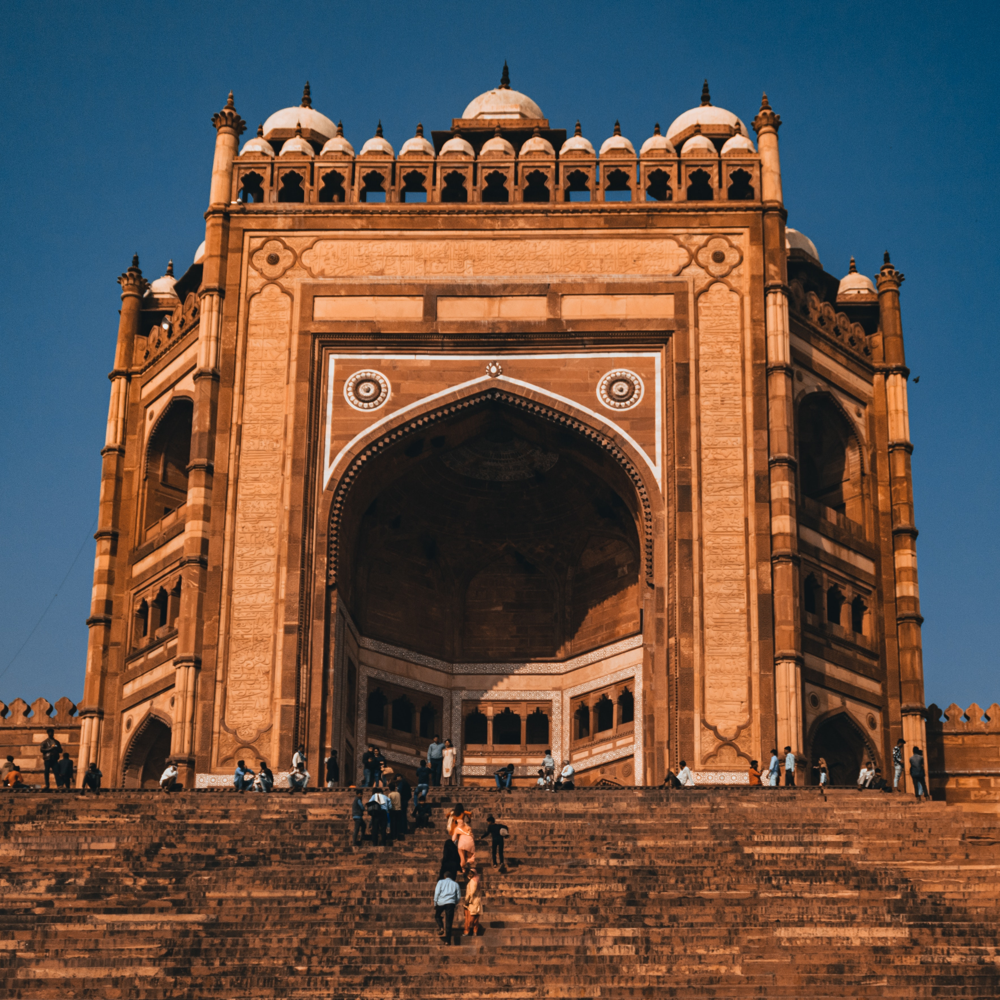

TOP RECCOMENDATIONS



Something more than Taj is waiting
A true wonder of the world
TAJ MAHAL
The Taj Mahal is considered to be the greatest architectural achievement in the whole range of Indo-Islamic architecture. Its recognised architectonic beauty has a rhythmic combination of solids and voids, concave and convex and light shadow; such as arches and domes further increases the aesthetic aspect. The colour combination of lush green scape reddish pathway and blue sky over it show cases the monument in ever changing tints and moods. The relief work in marble and inlay with precious and semi precious stones make it a monument apart. The uniqueness of Taj Mahal lies in some truly remarkable innovations carried out by the horticulture planners and architects of Shah Jahan. One such genius planning is the placing of tomb at one end of the quadripartite garden rather than in the exact centre, which added rich depth and perspective to the distant view of the monument. It is also, one of the best examples of raised tomb variety. The tomb is further raised on a square platform with the four sides of the octagonal base of the minarets extended beyond the square at the corners. The top of the platform is reached through a lateral flight of steps provided in the centre of the southern side. The ground plan of the Taj Mahal is in perfect balance of composition, the octagonal tomb chamber in the centre, encompassed by the portal halls and the four corner rooms. The plan is repeated on the upper floor.
AGRA FORT
Agra Fort is a historical fort in the city of Agra in India. It was the main residence of the emperors of the Mughal Dynasty till 1638, when the capital was shifted from Agra to Delhi. The Agra fort is a UNESCO World Heritage site.It is about 2.5 km northwest of its more famous sister monument, the Taj Mahal. The fort can be more accurately described as a walled city. After the First Battle of Panipat in 1526, the victorious Babur stayed in the fort, in the palace of Ibrahim Lodi. He later built a baoli in it. His successor, Humayun, was crowned in the fort in 1530. He was defeated at Bilgram in 1540 by Sher Shah Suri. The fort remained with the Suris till 1555, when Humayun recaptured it. Adil Shah Suri’s general, Hemu, recaptured Agra in 1556 and pursued its fleeing governor to Delhi where he met the Mughals in the Battle of Tughlaqabad. Sheesh Mahal, Agra Fort:The effect produced by lighting candles in Sheesh Mahal, Agra Fort. Realising the importance of its central situation, Akbar made it his capital and arrived in Agra in 1558. His historian, Abul Fazl, recorded that this was a brick fort known as ‘Badalgarh’. It was in a ruined condition and Akbar had it rebuilt with red sandstone from Barauli area Dhaulpur district, in Rajasthan. Architects laid the foundation and it was built with bricks in the inner core with sandstone on external surfaces.
BULAND DARWAZA
Buland Darwaza or the loft gateway at Fatehpur Sikri was built by the great Mughal emperor, Akbar in 1601. Akbar built the Buland Darwaza to commemorate his victory over Gujarat. The Buland Darwaza, approached by 42 steps and 53.63m high and 35 meters wide, is the highest gateway in the world and an astounding example of the Mughal architecture. It is made of red and buff sandstone, and decorated by carving and inlaying of white and black marble. An inscription on the central face of the Buland Darwaza throws light on Akbar's religious tolerance and broad mindedness. The Buland Darwaza towers above the courtyard of the mosque. It is semi octagonal in plan and is topped by pillars and chhatris, echoing early Mughal design with simple ornamentation, carved verses from the Koran and towering arches. There are thirteen smaller domed kiosks on the roof, stylized battlement and small turrets and inlay work of white and black marble. On the outside a long flight of steps sweeps down the hill giving the gateway additional height. A Persian inscription on eastern arch way of the Buland Darwaza records Akbar's conquest over Deccan in 1601 A.D.